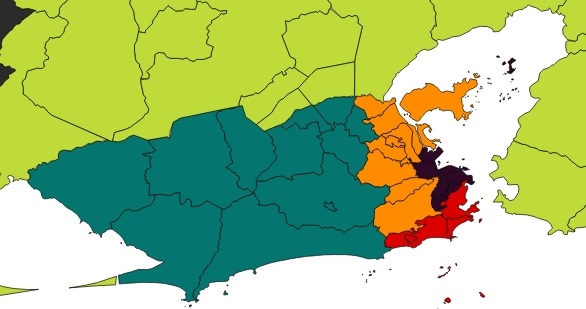

Esta visualização representa a matriz origem-destino da Região Metropolitana do Rio de Janeiro, Brasil segundo dados do PDTU.
Células coloridas indicam a ocorrência de viagens entre a região de origem (linha) e a região de destino (coluna) correspondentes. Quanto maior a luminância da cor, maior é a frequência de viagens.
As cores são atribuídas de acordo com a zona da região de destino:

Elaborado com D3.js usando como referência o exemplo de Mike Bostock.